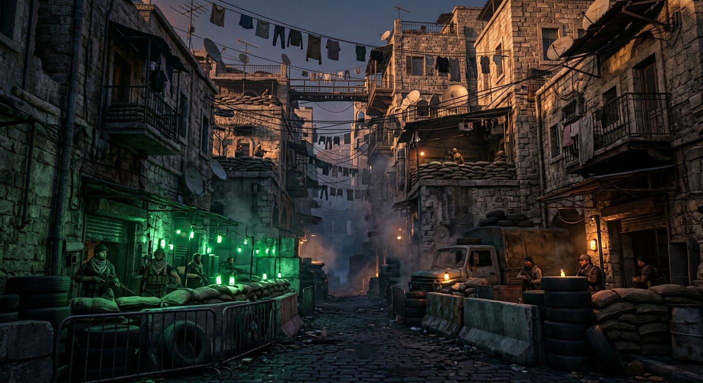
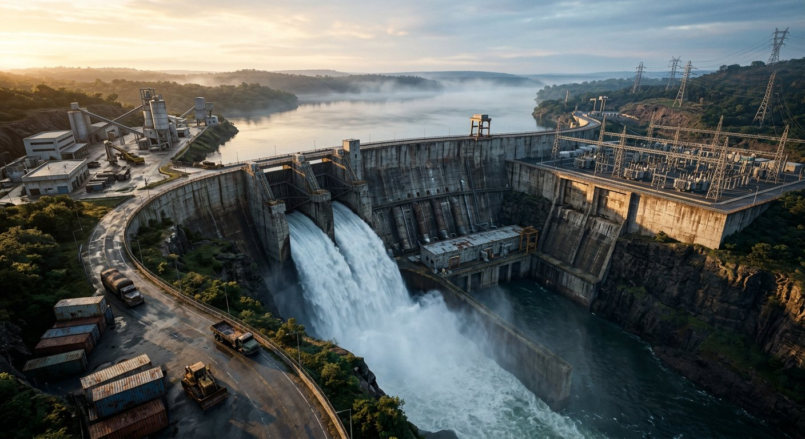
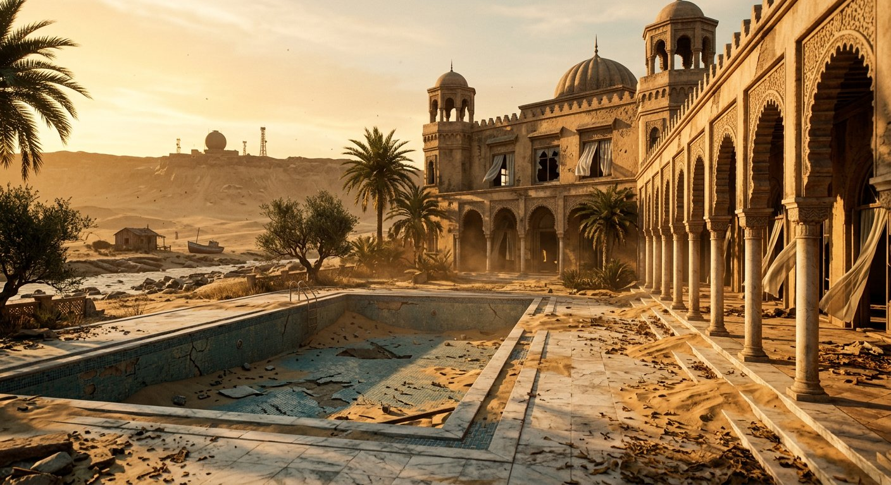
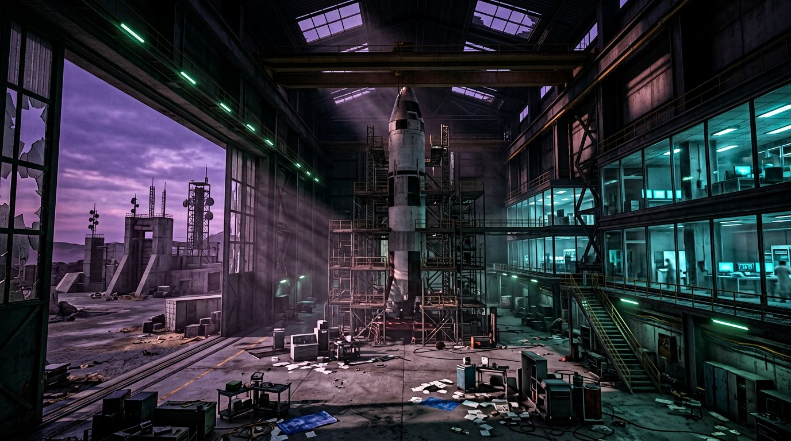
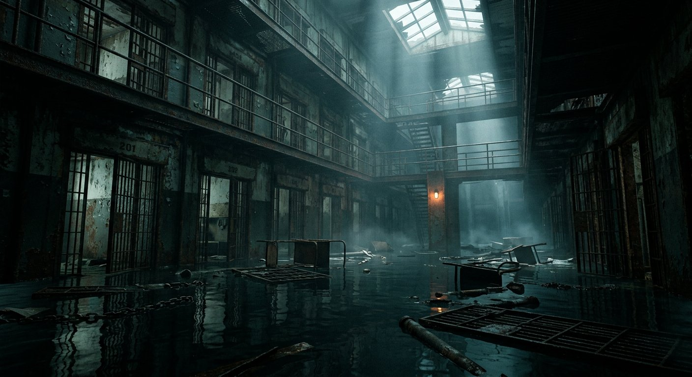
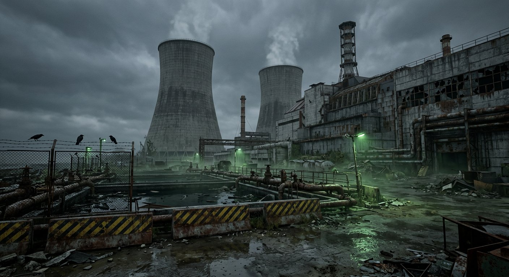
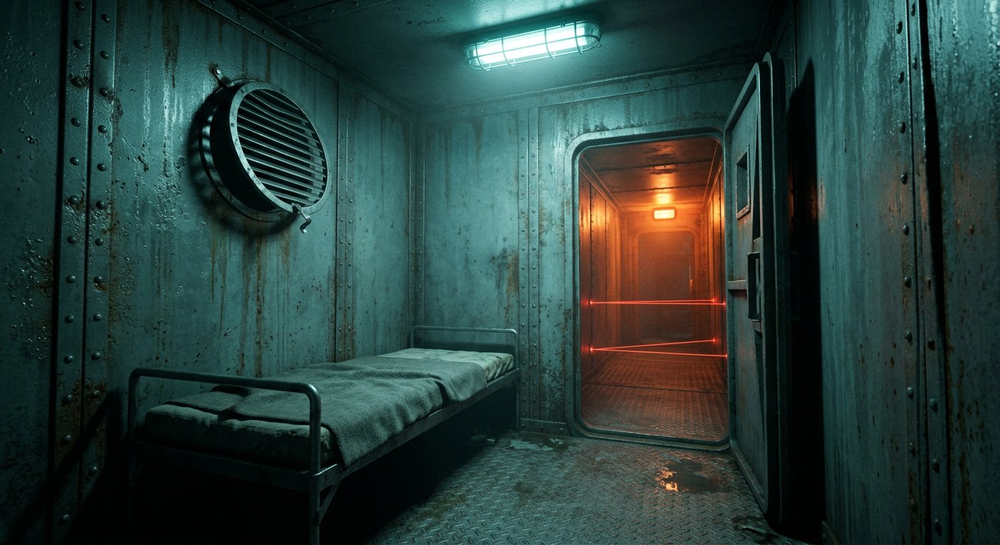
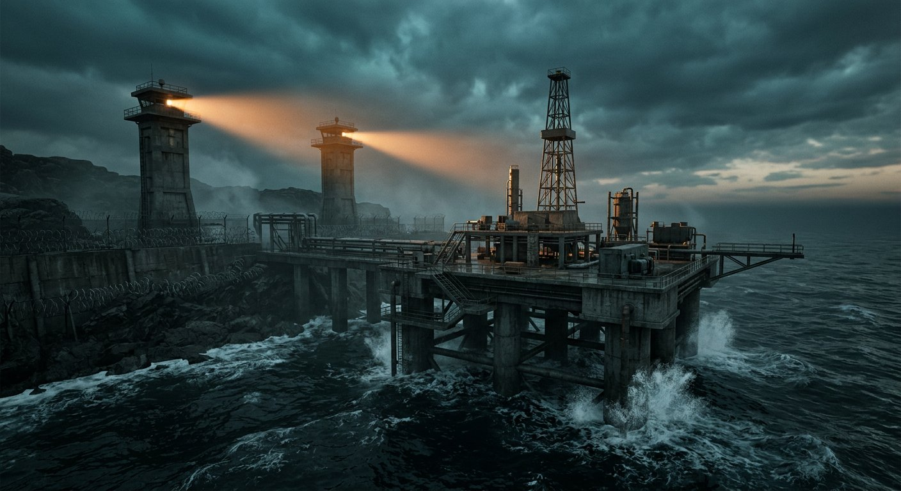
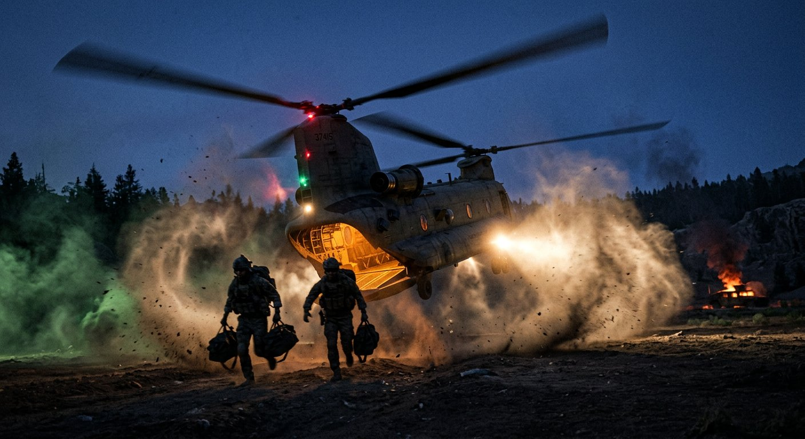

MÉCANISME 01
Mur laser
Indice : Une grille de faisceaux barre l'ouverture
Le bas du mur est dégagé : passez à plat ventre sous le faisceau le plus bas.
Les six cartes d'extraction, avec 1326 localisations référencées par la communauté. Marqueurs filtrables : extractions, boss, keycards, loot et portes à code.

Plan schématique à visée pédagogique : les marqueurs situent les zones décrites dans les guides, ils ne sont pas extraits du jeu. Pour des coordonnées exactes, consultez deltaforce.th.gl.
La carte d'entrée du mode extraction. Loot solide au barrage et dans les bâtiments administratifs, extractions généreuses, bots présents en Easy.
Boss : Saeed (Capitaine de la garde, surnom Fiery Owl)
Porte à code : Côté droit de la Major Substation : ramper dans le pipeline souterrain jusqu'au bout du passage.
Disponibilité : Easy / Normal / Eternal Night

Administrative Area pour le PvP et le gros loot (joueurs + spawns aléatoires). La plus rentable et la plus dangereuse.
Loot moyen à l'abri de la majorité des joueurs.
Le dortoir est rarement pillé par ceux qui y spawnent.
Plan schématique à visée pédagogique : les marqueurs situent les zones décrites dans les guides, ils ne sont pas extraits du jeu. Pour des coordonnées exactes, consultez deltaforce.th.gl.
Grande carte boisée remaniée en S11 (2.0) : Fisher's Hut, Rock Cavern, Underground Dock. Hôtel Sparkling Empress = le plus gros concentré de keycards de valeur du jeu.
Boss : Reis (surnom Abyss Shark, côté Ahsarah) — également contact de la tâche Bounty: Breaking Waves
Porte à code : Entrée souterraine près du point marqué dans le coin inférieur droit de la carte.
Disponibilité : Hazard

Plan schématique à visée pédagogique : les marqueurs situent les zones décrites dans les guides, ils ne sont pas extraits du jeu. Pour des coordonnées exactes, consultez deltaforce.th.gl.
Rénovée en S11 : Bon Lab, Black Chamber, Test Range, Space City Switch. Carte verticale et technique, forte densité de salles à keycard.
Boss : Desmoulins OU Hudson (directeurs Haavk) — tirage à chances égales à chaque apparition de commandant
Porte à code : Industrial Zone — Assembly Room 2F.
Disponibilité : Both (Hazard + Warfare)

Plan schématique à visée pédagogique : les marqueurs situent les zones décrites dans les guides, ils ne sont pas extraits du jeu. Pour des coordonnées exactes, consultez deltaforce.th.gl.
Ville haute densité avec des salles très rentables derrière keycard. Refonte majeure en Saison Aurora : Babel entièrement retravaillée, Central Command Zone redessinée, nouveau conflit de factions.
Boss : Blue Eagle HAAVK-64 (hélicoptère de patrouille)
Porte à code : Côté nord du Hammam.
Disponibilité : Normal en permanence ; Hard le week-end

Chercher en match un avant-poste de contact caché d'Ahsarah ou de Haavk, choisir son camp, réclamer le Faction Badge. Les missions de faction font monter le badge ; au Lv.2 se débloquent les faction milestones et les faction hunts.
La Garde Ahsarah veut reprendre la tour : on pousse dedans.
Haavk Corp veut protéger une livraison de cargo : on tient le terrain pendant qu'elle avance.
Perk haut badge : Rendre un nombre limité de gardes ennemis amicaux.
Aucune coordonnée fixe publiée par Garena — suivre les indices en match.
Rue principale, très disputée dès le début de partie.
Aussi meurtrière que le côté hôtel.
Itinéraire nettement moins fréquenté, le plus sûr pour un solo.
Plan schématique à visée pédagogique : les marqueurs situent les zones décrites dans les guides, ils ne sont pas extraits du jeu. Pour des coordonnées exactes, consultez deltaforce.th.gl.
Complexe pénitentiaire offshore. SEULE carte où la partie commence enfermé en cellule : il faut s'évader avant de pouvoir tirer. Sections inondées et loot sous-marin ; au moins une extraction impose de plonger.
Boss : Warden Ghroth (boss principal depuis septembre 2025) + Raven (via les opérations Ravenhunter et Starslayer)
Porte à code : Prison Administrative Area, 1F, coin de l'escalier du hall.
Disponibilité : Hazard (carte Hard désignée)

Plan schématique à visée pédagogique : les marqueurs situent les zones décrites dans les guides, ils ne sont pas extraits du jeu. Pour des coordonnées exactes, consultez deltaforce.th.gl.
Centrale nucléaire. Carte compacte pour des runs de loot rapides et des hot drops PvP. Zone radioactive : la Decontamination Chamber du Black Site est quasi obligatoire.
Boss : Neural Device Agent H1000
Porte à code : Bâtiments près de la Seawater Treatment Area.
Disponibilité : Easy (Ops Lv.9) / Normal (Ops Lv.14) / Supercritical (18 décembre 2026, Ops Lv.30)
Coût d'entrée : AZ3 Normal : 112 500 Tekniq Alloys par entrée.

Tide Prison est la seule carte d'Operations qui ne commence pas par un déplacement mais par une énigme. Vous apparaissez dans une cellule, désarmé, et vous devez en sortir avant de pouvoir jouer. Votre équipement vous attend dans un casier juste à l'extérieur. Chaque cellule tire au sort un mécanisme de sortie parmi cinq ; une fois les cinq connus, l'évasion prend dix à quinze secondes et devient un non-événement.


Indice : Une grille de faisceaux barre l'ouverture
Le bas du mur est dégagé : passez à plat ventre sous le faisceau le plus bas.
Indice : Un conduit au sol ou en hauteur, fermé par un panneau à lecteur
Nécessite une carte d'accès. Conservez-en toujours une sur vous au départ.
Indice : Barreaux massifs sans lecteur
Posez une charge de brèche. Le bruit s'entend loin : attendez-vous à de la compagnie.
Indice : Un lecteur biométrique clignote en rouge
Quatre fragments d'empreinte sont dispersés dans la cellule. Ramassez-les tous, puis validez au lecteur.
Indice : Un écran de console actif
Mini-jeu de piratage classique. Pas de matériel requis, juste du sang-froid.
| Niveau | Ouvre | Durabilité | Où la trouver |
|---|---|---|---|
| Niveau 1 | Cellules, portes de service, zones communes | ≈ 100 points | Butin courant, casiers de gardiens |
| Niveau 2 | Infirmerie, ateliers, étages intermédiaires | ≈ 100 points | Conteneurs sécurisés, IA d'élite |
| Niveau 3 | Bureau principal, salles à fort butin | ≈ 80 points | Rare — souvent gardée par un adversaire déjà sur place |
Chaque ouverture consomme de la durabilité. Une carte n'est pas un passe illimité : planifiez l'itinéraire avant de brûler des points sur une porte sans intérêt.
Activez le terminal de l'infirmerie, puis le scanner biométrique à l'étage, puis abaissez le levier du bureau principal. Le levier n'est utilisable que deux fois par partie : si deux escouades sont déjà sorties par là, cette route est morte.
Conseil : Faites les deux premières étapes en début de partie, avant que le sac ne pèse. Gardez le levier pour la fin.
Une zone d'évacuation ouverte, en bord d'eau, directement sous les tours de guet.
Conseil : Totalement à découvert. N'y allez qu'avec un fumigène, ou après avoir vérifié les tours.
Dans la zone de construction, vous pouvez partir en plongée en abandonnant votre sac à dos.
Conseil : La sortie de secours. Si vous transportez un objet de grande valeur dans vos poches sécurisées et que tout va mal, c'est la décision rentable.

Cet ordre est une moyenne, pas une loi : certaines parties voient l'Administration complètement sèche et l'usine à ciment déborder. Le vrai pain quotidien d'un joueur solo reste les nids d'oiseau, les caisses de transport aérien et les sacs de voyage — présents partout, peu disputés, et qui se remplissent pendant que les autres se battent pour l'Administration.
Relevé communautaire. Les sorties conditionnelles et leurs seuils changent au fil des saisons.
| Sortie | Condition | Remarque |
|---|---|---|
| Entrée de route Rear Grip ouest (est de la carte) | Fixe — présente chaque partie | Votre plan B par défaut. |
| Tunnel Rear Grip est (ouest de la carte) | Fixe — présente chaque partie | Faible fréquentation, peu de campeurs. |
| Raccourci près de la route (est) | ≈ 50 % d'apparition | Ne construisez jamais un itinéraire qui en dépend. |
| Entrée de route Rear Grip est (ouest) | ≈ 50 % d'apparition | Idem — toujours prévoir une solution de repli. |
| Berge de la rivière (sud-est) | Paiement de 10 000 | Le péage filtre les joueurs fauchés, mais signale aussi que vous transportez de la valeur. Des joueurs s'y postent. |
| Sommet du barrage (ouest) | Moins de 30 kg transportés | Parfait pour une sortie légère et chère. Le seuil rend votre profil prévisible. |
| Voie de réparation (est) | Abandon du sac à dos | La sortie de secours quand tout va mal et que l'essentiel est en poche sécurisée. |
| Ascenseur industriel | Activation par levier | Le levier s'entend. Attendez-vous à de la compagnie. |
Space City distribue huit points de départ. Deux sont garantis à chaque partie : le Dortoir et le Passage employés. Une partie compte généralement 18 à 20 joueurs, soit six escouades de trois complétées par des équipes partielles. Savoir où vous êtes tombé détermine la totalité de votre plan.
Appelée « l'apparition du Gardien ». Vous contrôlez le Pont Central et pouvez frapper quiconque le traverse. C'est aussi pourquoi la plupart des parties s'y décident : une seule équipe en ressort généralement.
Paradoxalement l'une des meilleures : la majorité des joueurs se concentre dans la moitié haute. Pendant qu'ils s'entretuent dehors, vous pillez le cœur tranquillement.
La plus proche du cœur. Elle était considérée comme la meilleure, jusqu'à ce que tout le monde connaisse la carte. Le risque a beaucoup monté.
Garantie chaque partie. Montez à l'étage, observez par la vitre pare-balles si la Porte Ouest est ouverte avant de vous engager.
Au moins vous avez de quoi piller sur place, dont un grand coffre ajouté à la Salle d'impression en Hard.
Deux expériences totalement différentes selon que vous ayez ou non la carte du Pont-levis est. Sans elle, c'est la pire position de la carte.
Souvent éliminé très tôt, et peu de butin de repli.